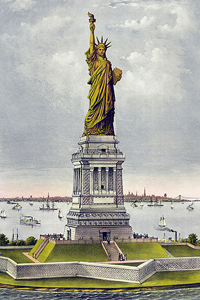

Lezione 14  Stati Uniti
Stati Uniti

-
275
470
-
310
445
-
310
485
-
275
505
NEW YORK
Emigranti italiani sbarcano a Ellis Island, New York, all’inizio del Novecento. L’immigrazione europea è una delle maggiori spinte propulsive dello sviluppo statunitense nel XX secolo.
NEW YORK
La Statua della Libertà è disegnata dallo scultore francese Frédéric-Auguste Bartholdi e progettata dall’ingegnere Gustave Eiffel; i pezzi smontati vengono inviati in America via mare e vengono assemblati nel 1866.In questa incisione, realizzata prima che il monumento venga inaugurato, vediamo che all’inizio l’orientamento previsto è diverso da quello poi effettivamente scelto.NEW YORK
1890-1900: L’immigrazione di persone che dall’Europa arrivano in America alla ricerca di nuove e più favorevoli condizioni di vita raggiunge la quota di 8,8 milioni di persone. Il fenomeno genera anche misure restrittive: si possono accogliere solo bianchi, anglosassoni e protestanti. Ma è anche all’origine dello sviluppo del paese: cresce l’apparato industriale, si forma il movimento sindacale.NEW JERSEY
Straordinario sviluppo economico degli Stati Uniti. Agli inizi del 1900 sono ormai la prima potenza economica del mondo. La popolazione raggiunge i 95 milioni di cui 14 milioni giunti in America dopo il 1900. La Prima guerra mondiale segna l’ingresso degli USA nella scena politica internazionale, quali protagonisti.